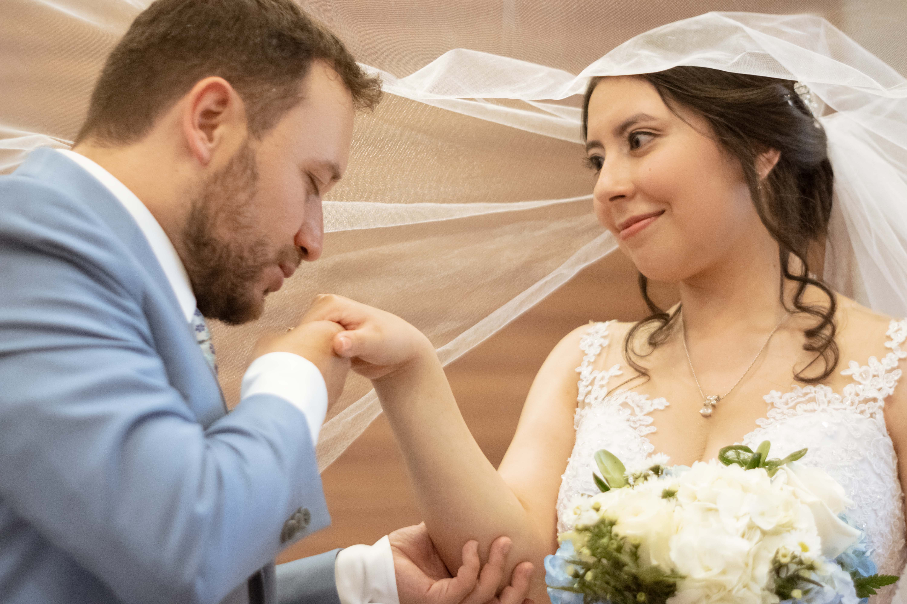
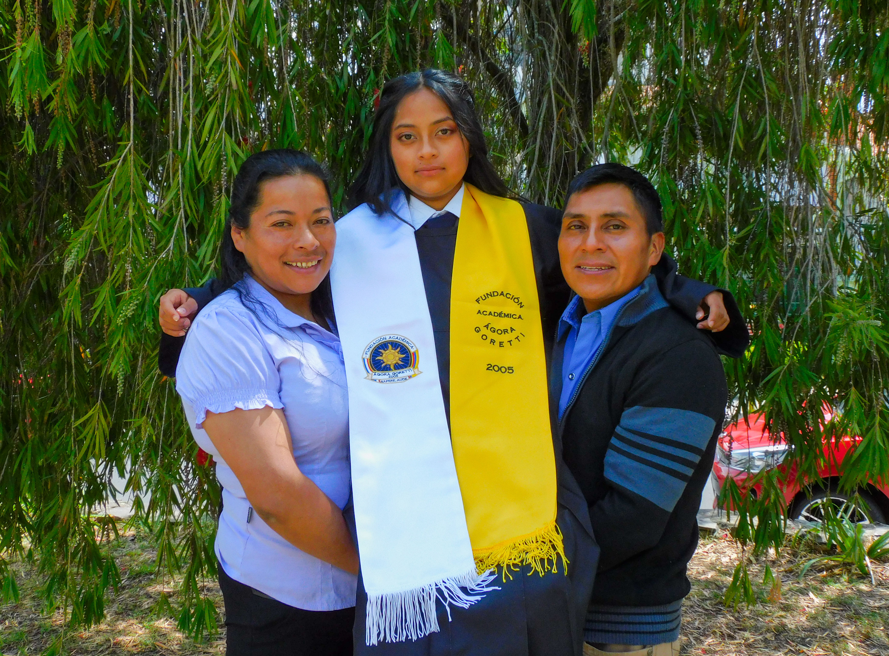
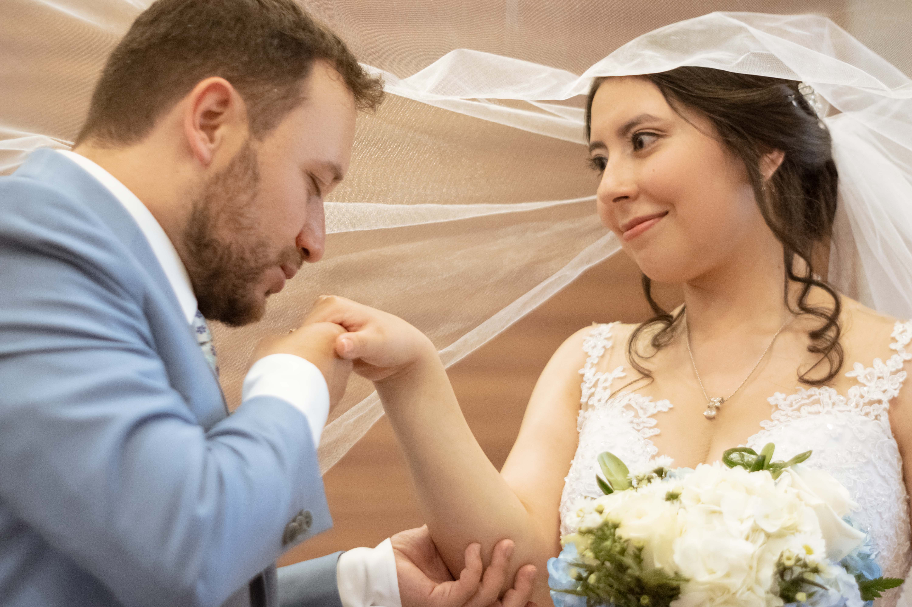
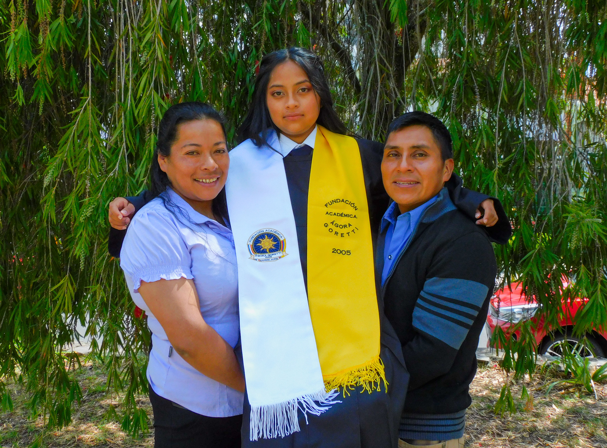

Alejadra Garcia
Tengo 25 años y soy una apasionada del diseño y la fotografía. Me encanta crear composiciones atrevidas y visualmente impactantes que conecten con el público y dejen una huella duradera. Actualmente estudio Ingeniería de Software, lo que me ha permitido complementar mi lado creativo con una visión técnica enfocada en la innovación digital y el desarrollo de soluciones funcionales. Soy una persona sociable, responsable, ordenada y respetuosa, cualidades que me permiten trabajar con facilidad en equipo y mantener siempre un ambiente creativo y colaborativo. Mi objetivo es seguir creciendo profesionalmente, combinando mi pasión por el diseño con mis conocimientos en tecnología para crear experiencias visuales únicas y efectivas.


 


